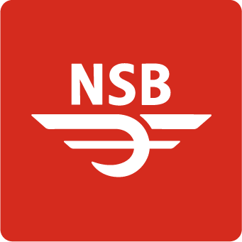
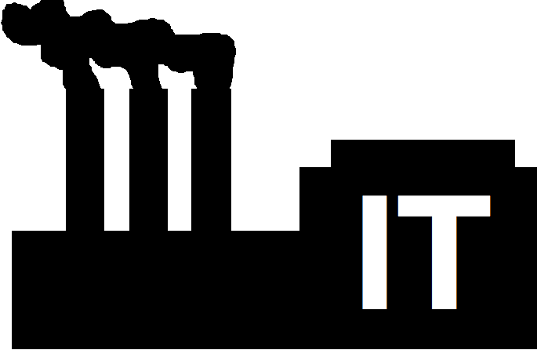

En skyrigg for kontinuerlige leveranser


Sky-tjenester

Hvorfor?

The Lean Startup

Lean Startup ♥ Kontinuerlige leveranser
Hva er egentlig
Kontinuerlige leveranser?

...a software development discipline where you build software in such a way that the software can be released to production at any time.
Continuous delivery is about putting the release schedule in the hands of the business,
not in the hands of IT.
Kontinuerlige leveranser ♥ DevOps
Hva er egentlig DevOps?
You build it, you run it!
Developers carry beepers

DevOps → NoOps/JustDevs?
DevOps ♥ Sky
Målsetningene våre
- Smidige
- Tilpasningsdyktige
- Raske
- Robuste
- Autonome
Vi ønsket et fokusskifte
|
Utvikling Drift Forvaltning |
→
|
Produktutvikling
|
Våre viktigste prinsipper
Enkelhet og automatisering
uten at det skal gå ut over
tilgjengelighet, stabilitet, og sikkerhet
Løsningen
- Kryssfunksjonelle team inkludert forretning
(Build → Measure → Learn) - DevOps og kontinuerlige leveranser
- You build it, you run it
- Sky, Sky, Sky!
Våre prinsipper for skybruk
- Iaas→ driftede skytjenester og PaaS
- Automatiser mot API-er
(Ingen klikking i GUI eller fikling i prod!) - Kjøp/bruk tjenester istedenfor å lage de selv
- Bruk offentlig sky. Ikke privat.
We decided we needed to buy innovation
IaaS
Nettverk

Automatiser!

Infrastruktur som kode
- Dokumenterer (infrastruktur som kode)
- Versjonerer (historikk)
- Sikrer like miljøer (immutable)
- Testbart (kontinuerlig integrasjon)
- Evolusjonært (små endringer gradvis)
- Automatiserer (fjerner det feilbarlige mennesket)
resource "aws_vpc" "vpc" {
cidr_block = "${var.vpc_cidr}"
enable_dns_hostnames = true
tags { Name = "${var.vpc_name}" }
}
resource "aws_route" "internet_access_route" {
route_table_id = "${aws_vpc.vpc.main_route_table_id}"
destination_cidr_block = "0.0.0.0/0"
gateway_id = "${aws_internet_gateway.ig.id}"
}
resource "aws_subnet" "subnet" {
vpc_id = "${var.vpc_id}"
count = "${var.number_of_subnets}"
cidr_block = "${lookup(var.cidr_blocks, "zone_${count.index}")}"
availability_zone = "${lookup(var.zones, "zone_${count.index}")}"
map_public_ip_on_launch = "${var.map_public_ip_on_launch}"
tags { Name = "${var.name}_subnet_${lookup(var.zones, "zone_${count.index}")}" }
}
resource "aws_instance" "instance" {
ami = "${var.ami}"
instance_type = "t2.micro"
key_name = "${var.key_pair_id}"
subnet_id = "${var.subnet_id}"
associate_public_ip_address = true
source_dest_check = false
vpc_security_group_ids = [ "${var.security_group_ids} ]
tags { Name = "${var.instance_name}" }
}


Driftede skytjenester (SaaS)
- RDS (Relational Database Service)
- Route53 (DNS)
- CloudWatch (monitoring, events, logging)
- IAM (tilgangskontroll og sikkerhet)
- S3 (skalerbar lagring)
PaaS
Elastic Beanstalk

Elastic Beanstalk
Easy to begin, Impossible to outgrow
- konfigurasjon
- deploy
- kapasitet-provisjonering
- lastbalansering
- auto-skalering
- monitorering
Monitorering
Andre tjenester
- Panopticon (intern monitorering)
- Pingdom (ekstern monitorering)
- Pagerduty ("vakttelefon")
- Slack (ChatOps)
- Github (til alt!)
- Travis (byggeserver)
- Pass (hemmeligheter)
- Ansible (konfigurasjonsstyring)
Hva har vi lært?
1 2 3 4 5 6
- Reduser IaaS til et minimum
- Bruk driftede skytjenester hvor du kan
- Bruk PaaS for tjenesteutvikling
- Automatisering, Automatisering, Automatisering...
- Monitorering, Monitorering, Monitorering...
- Migrering av eksisterende tjenester er det vanskeligste
Planer for fremtiden
- Skrive om fra "lift and shift" til "cloud native" applikasjoner
- Mikrotjenester passer som hånd i hanske
for hva NSB ønsker å oppnå - #Serverless?
Hvilke gevinster sitter vi igjen med?
- Redusert ledetid
- Smidig forretningsutvikling
- Fortløpende feilfiksing
- Prod.-like miljøer on demand
- Elastisitet og autoskalering
- Innsikt i alt som skjer
- Eierskap til det som leveres
- Ansvaret er plassert der hvor det hører hjemme
- Færre ting å tenke på
- Det vanskeligste er skyleverandørens ansvar
- Høyere medarbeidertilfredshet
The primary value of cloud is to generate competitive advantage
Cost savings is a side effect
Thank you!
Slides:
http://steinim.github.io/slides/frokostseminar-skyrigg-for-kontinuerlige-leveranser/